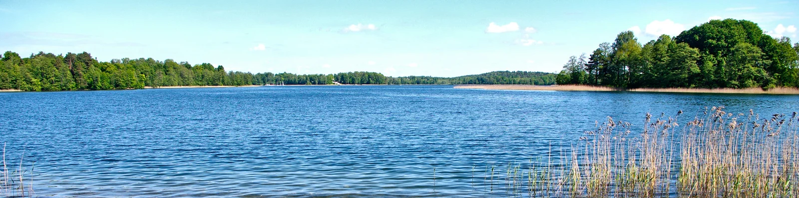
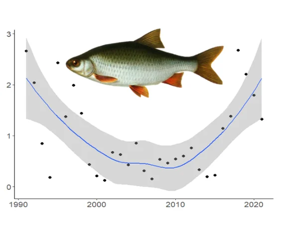
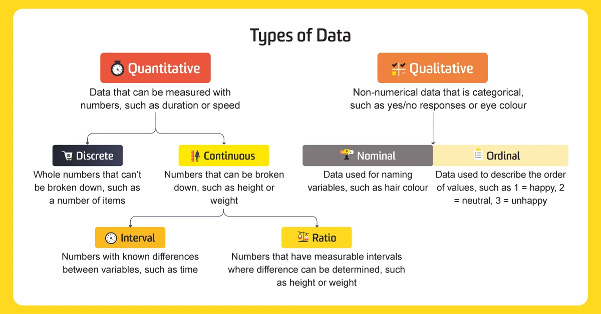

Sustainable Inland Fisheries
Healthy ecosystems in a changing world
Sustainable Inland Fisheries is a Nature Research Centre scientific project funded by the Lithuanian Research Council. Our mission is to help improve ecosystem health and fisheries management in the inland waters of Lithuania and elsewhere. Inland ecosystems are important for recreation, subsistence fishing, biodiversity and essential ecological services. Our team is developing simple tools for fisheries management and understanding of inland ecosystems now and into the future. We use modern, open science approaches that harnesses the power of citizen science and facilitate effective science communication.


Learn more
Assessing recreational fishing effort and catches in Lithuania
Catch-release fishing: How to release caught fish safely
Assessing recreational fishing effort and catches in Lithuania
Available with English subtitles
Online workshop

Online courses
Size based ecosystem models with the R package mizer and applications for coastal and inland ecosystems

Machine learning based image collection, annotation and classification

Catch per unit effort data standardisation in R for fisheries biologists and practitioners

Exploring, cleaning & filtering data prior to analysis

This project is funded by the European Regional Development fund (measure Nr. 01.2.2-LMT-K-718), project “Advanced models, citizen science and big data for sustainable food production and ecological services of inland aquatic ecosystems”